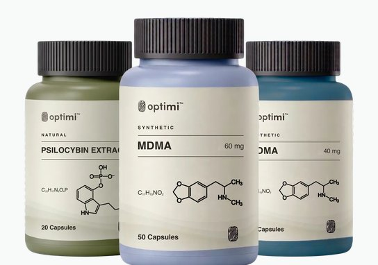
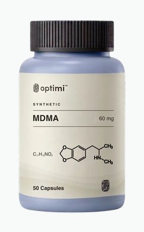
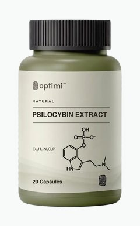
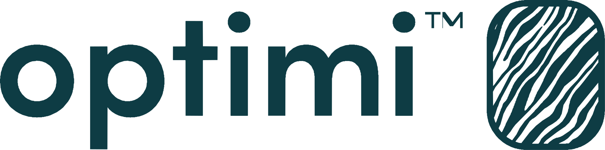

Licence
GMP
Health Canada DEL
Active market
Australia
TGA Authorised Prescribers

Synthetic · Capsule
Prescribed by authorised prescribers in Australia since October 2024. A new subsidiary, Optimi Australia, now sells to clinics and pharmacies there.

Natural · Capsule
The amended protocol is under Health Canada review. The same capsule has been supplied to Australian prescribers since September 2025.
MDMA-assisted therapy for PTSD in 100 veterans and front-line workers. Holds a Health Canada No Objection Letter; expected to begin in 2027.
MDMA and psilocybin batches for the planned trials and Australian supply were completed in Princeton in Sep and Oct 2026.
Preparing a U.S. IND for OPTI-101; an IND for OPTI-201 is planned for 2027.

Nasdaq: OPTHOptimi’s psilocybin and MDMA products are investigational; none has market authorization from Health Canada or the FDA. Trial plans and timing are forward-looking. See SEC filings for risk factors.